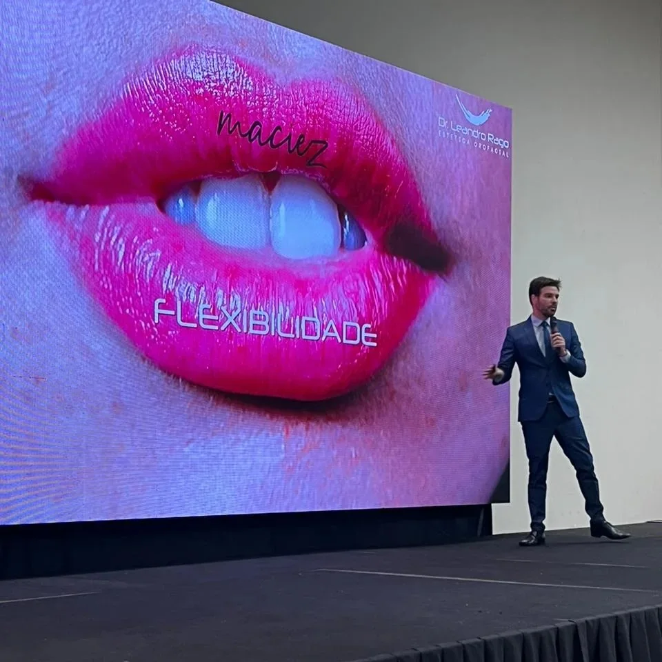
No palco
Sessões das 8h às 19h nos dois dias, em auditório único. Sem sala paralela, sem escolher entre duas aulas que você queria assistir.
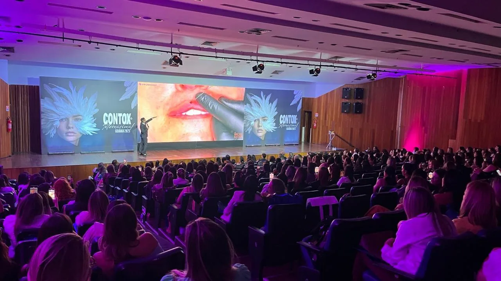
Pré-venda aberta


 7 países representados
7 países representados
Esgotou O Contox Goiânia 2026, edição mais recente do congresso, vendeu todos os ingressos e encerrou as inscrições antes do evento.
01
O congresso
O Contox é um congresso de harmonização orofacial e estética que existe desde 2014 e roda o país reunindo professores, indústria e profissionais da saúde em torno de um mesmo assunto. Em Cuiabá, já foram quatro edições: a 32ª do congresso, em 2024, e a 43ª, em 2025.
Em novembro de 2026 vem a quinta. Para a organização, esta edição marca a consolidação de Cuiabá como um dos polos de harmonização facial e estética avançada do Centro-Oeste, e não como escala de fim de calendário.
O futuro pertence a quem aprende primeiro.
Manifesto do Contox Cuiabá 2026
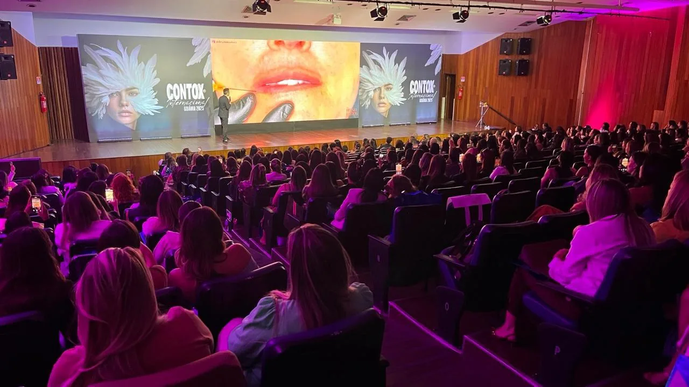
02
Tema da edição
Resultado bonito na foto parou de ser o critério. O que decide hoje é a leitura do paciente, a associação correta de técnicas e quanto tempo o trabalho se sustenta. É esse recorte que organiza os dois dias.
A grade horária detalhada, com o tema de cada aula, é divulgada pela organização à medida que os professores são confirmados.
03
Line-up
Quem sobe ao palco em Cuiabá vem de seis estados e de frentes diferentes da harmonização: full face, peelings, cirurgia estética orofacial, rejuvenescimento e mercado.
Rio de Janeiro
Criador do método Natural, mas significativo®, com mais de 18 mil profissionais impactados. PhD, referência internacional e premiado mundialmente por seus casos clínicos.
São Paulo
Uma das maiores autoridades mundiais em peelings e gerenciamento da pele. Inovador e criador de técnicas.
Distrito Federal
Um dos grandes nomes da harmonização facial no Brasil. Casos clínicos consistentes, resultados naturais e uma didática que transforma conhecimento em prática.
Distrito Federal
O fenômeno da HOF brasileira. Presença constante nos maiores congressos da estética e sempre entre as melhores aulas.
Goiás
Mestre em odontologia, especialista em rejuvenescimento facial com resultados naturais. Atua em atendimentos, mentorias e cursos.
Mato Grosso · da casa
Pioneira da CEOF. Especialista em cirurgia bucomaxilofacial, cirurgia estética orofacial e harmonização orofacial, com formação pela USP e mestrado pela UNIC.
Novos professores são anunciados até a semana do congresso. Garantir vaga no valor de pré-venda
Para quem é
Profissionais da saúde que trabalham com HOF e estética, e também quem gerencia clínica e precisa entender o mercado antes de comprar tecnologia.
04
Como funciona

Sessões das 8h às 19h nos dois dias, em auditório único. Sem sala paralela, sem escolher entre duas aulas que você queria assistir.
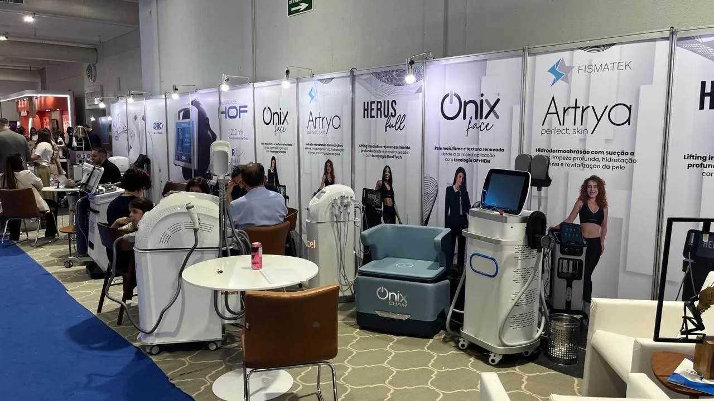
Entre uma sessão e outra a feira de negócios fica aberta: equipamento para testar, injetável para conhecer, indústria e distribuidor no mesmo corredor.
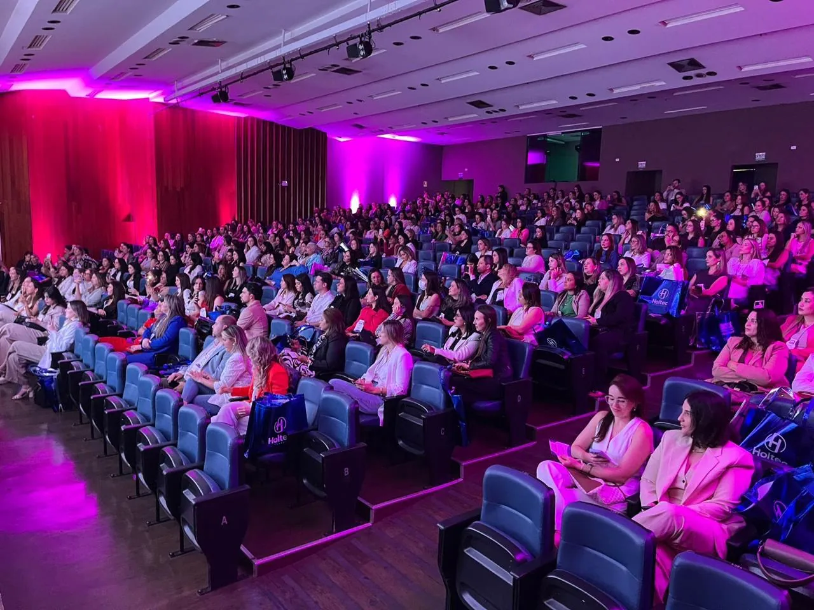
Happy hour, jantar dos professores e a parte social que o Contox leva a sério há mais de dez anos.
“Se não há diversão, também não há evolução.” Resposta oficial do Contox no FAQ do evento.
05
Feira de negócios
A feira comercial funciona nos intervalos do congresso e coloca indústria, distribuidor e clínica no mesmo corredor. Abaixo estão as 40 marcas que expuseram e patrocinaram o Contox Goiânia 2026, edição mais recente do congresso.
A relação de expositores de Cuiabá é divulgada pela organização conforme os contratos são fechados.
Quero expor minha marca06
Edições anteriores
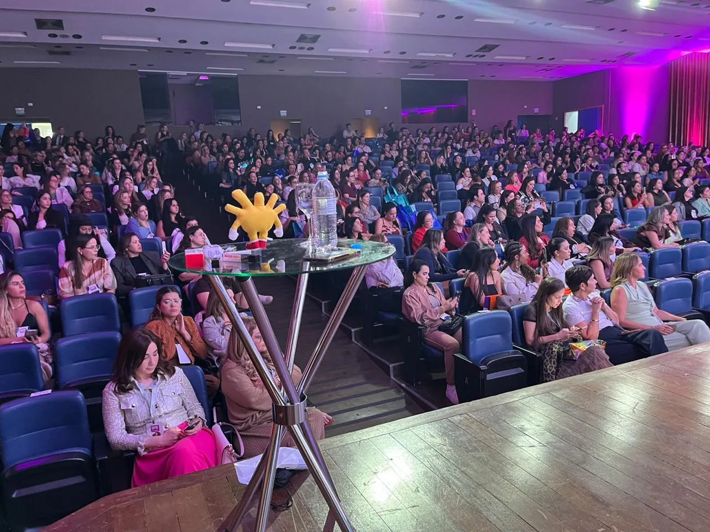
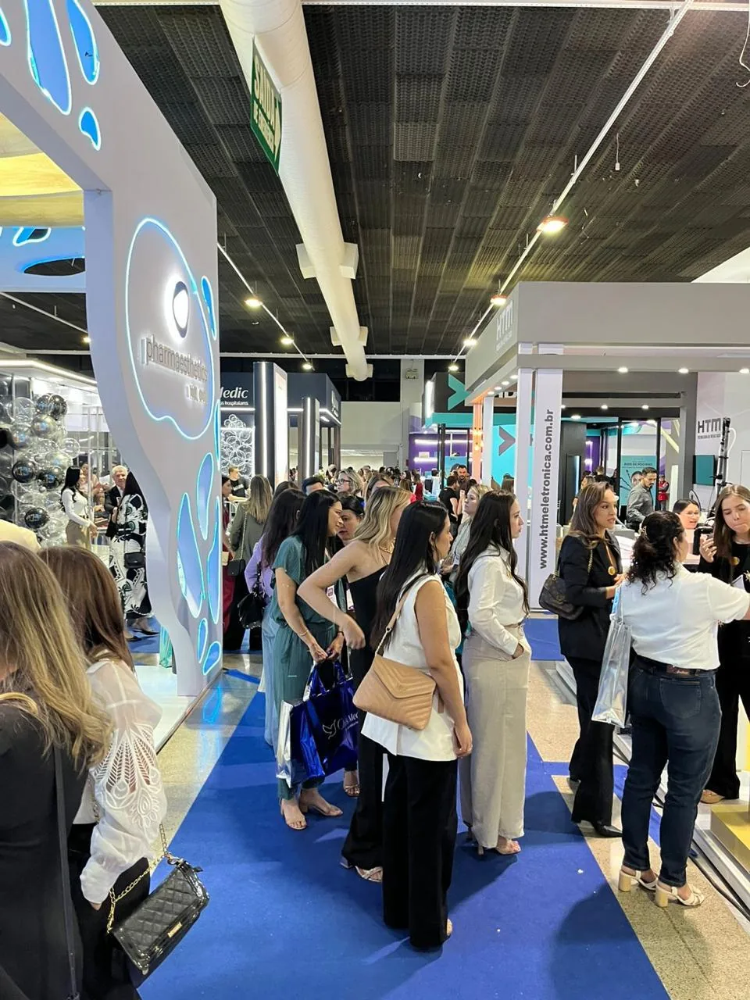
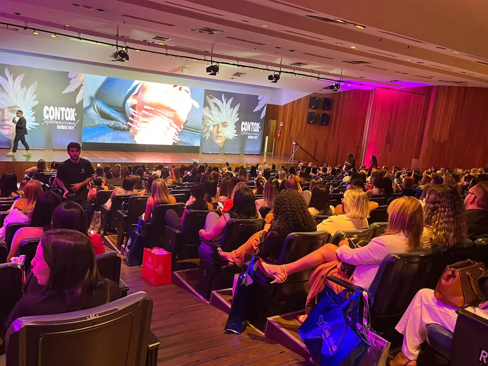
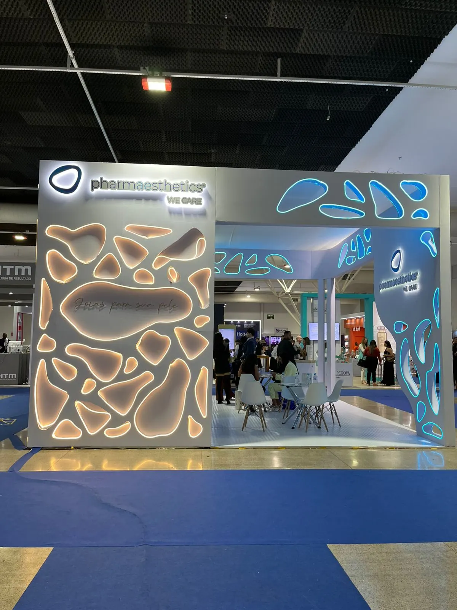
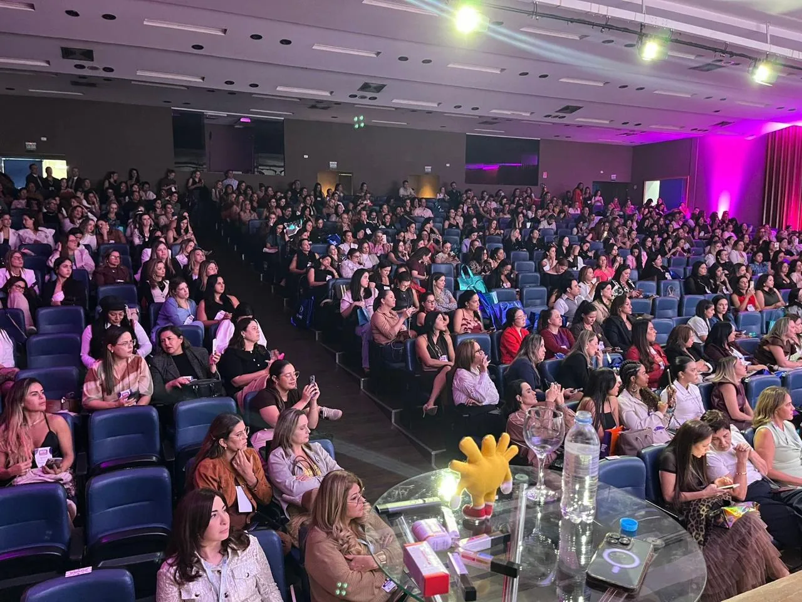
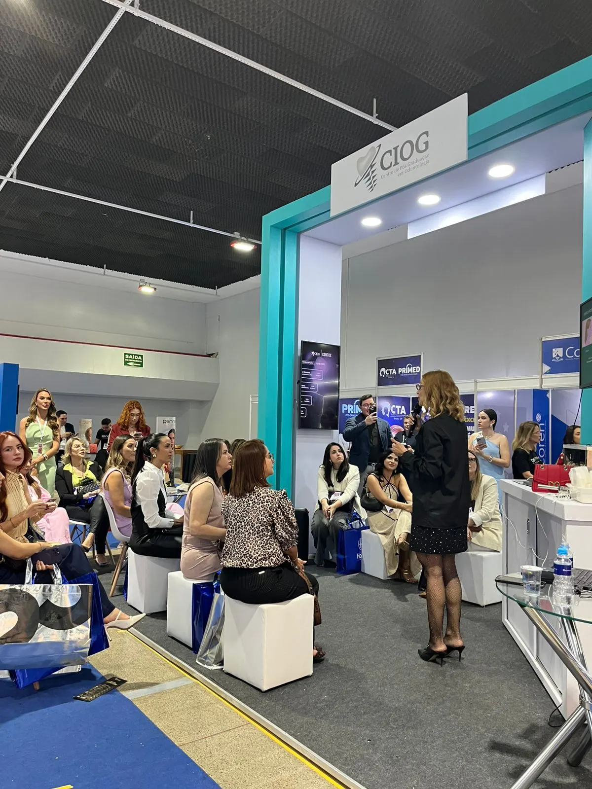
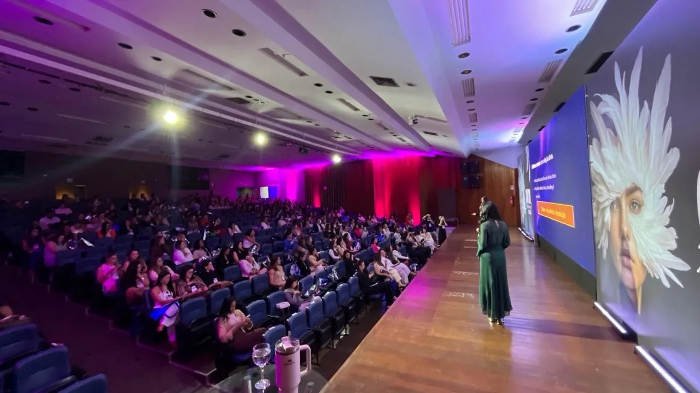
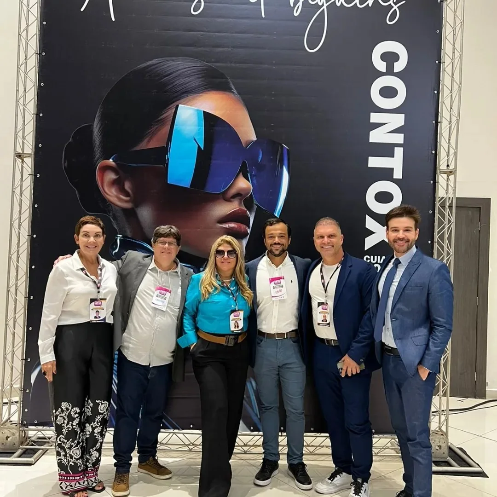
Registros das edições de Goiânia e das últimas edições do Contox. Fotos do evento, não banco de imagens.
07
Onde acontece
O Centro Universitário Senai MT fica a poucos minutos do centro de Cuiabá, com estrutura de auditório e área para a feira no mesmo prédio.
08
Inscrição
Um ingresso, acesso completo aos dois dias. O valor abaixo é o de pré-venda, praticado enquanto a organização não abre os lotes seguintes.
Pré-venda
R$575à vista no pix, com desconto
ou 3x de R$ 195 sem juros no cartão · até 12x com juros
Garantir minha vagaPagamento por Mercado Pago (parcelado) ou pix à vista com desconto.
Há condição especial mediante envio de foto da carteirinha atual para aprovação.
Falar com a equipe no WhatsAppAinda a divulgar pela organização: grade horária por horário, novos professores e a lista de expositores de Cuiabá.
09
Dúvidas frequentes
Se a sua não estiver aqui, a organização responde pelo WhatsApp (51) 99982-8461.
O Contox Cuiabá V é um congresso de harmonização orofacial, harmonização corporal e estética avançada realizado em Cuiabá, Mato Grosso. É a quinta edição do congresso na cidade e acontece em 27 e 28 de novembro de 2026, no UniSenai, com organização da MS Business Eventos. O Contox existe desde 2014.
Sexta-feira 27 e sábado 28 de novembro de 2026, das 8h às 19h nos dois dias, no UniSenai, Centro Universitário Senai MT, na Av. XV de Novembro, 303, bairro Porto, Cuiabá (MT), CEP 78020-300.
Para todos os profissionais da saúde que trabalham com HOF e estética: dentistas, farmacêuticos, biomédicos, médicos, fisioterapeutas, enfermeiros, esteticistas e outras áreas da saúde. E também para empresários do setor.
Até agora: Leandro Rago (RJ), Lorena Santos (GO), Patrícia Regina (DF), Nelson Mauricio Jr. (SP), Bruno Bastos (DF) e Ana Paula Barbosa (MT). Novos nomes são anunciados pela organização ao longo do ano.
A inscrição pode ser feita pelo Mercado Pago, com parcelamento, ou via pix à vista com desconto.
Somente estudantes de graduação, mediante envio de foto da carteirinha atual para aprovação via WhatsApp.
Depois de se inscrever, no primeiro dia do evento basta informar seu nome e apresentar um documento na secretaria.
Nas palavras da organização: se não há diversão, também não há evolução. A parte social inclui happy hour, jantar dos professores e outros momentos ao longo dos dois dias.
Conforme o art. 49 do Código de Defesa do Consumidor, o congressista tem sete dias, a contar da data da inscrição, para solicitar o cancelamento e a restituição integral do valor pago. Depois dos sete dias, cada caso é analisado individualmente.
Entre uma sessão e outra do congresso acontece a feira de negócios. Para expor ou patrocinar, fale com a organização pelo WhatsApp +55 (51) 99982-8461 ou preencha o formulário de expositor.
27 e 28 de novembro de 2026
A pré-venda está aberta e o valor sobe quando a organização abrir os próximos lotes. Se você já sabe que vai, garanta agora.